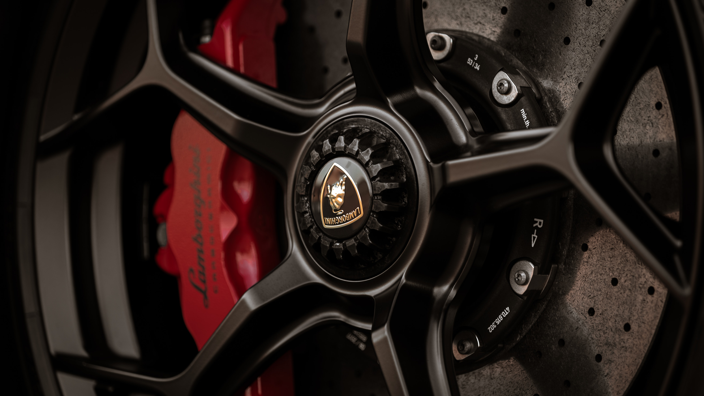

A JOURNEY INTO THE PAST
Feruccio Lamborghini
Ferruccio Lamborghini was an Italian entrepreneur and the founder of Lamborghini. Before establishing the renowned car company,
Lamborghini, he was primarily known for his successful tractor-manufacturing business. Born on April 28, 1916, in Cento, Italy,
Lamborghini's early career revolved around agricultural machinery, where he gained a reputation for building high-quality tractors.
His expertise in engineering and innovation led him to transition into the world of sports cars, founding Automobili Lamborghini in 1963.
Today, Lamborghini is celebrated for producing some of the world's most prestigious and luxurious supercars, carrying on the legacy of its visionary founder.

The Start of an Era
Lamborghini's Origin:
In the early 1960s, Ferruccio Lamborghini, an Italian entrepreneur and owner of a successful tractor-manufacturing business, decided to venture into the world of high-performance sports cars.
Founding the Company:
In 1963, he established Automobili Lamborghini S.p.A. in Sant'Agata Bolognese, Italy, with the aim of challenging established marques like Ferrari. Lamborghini's obsession with perfection led to the creation of the iconic Lamborghini Miura in 1966, setting the stage for a legacy of extraordinary automobiles.
Early Successes:
Lamborghini's first production car, the 350 GT, was introduced in 1964, followed by the 400 GT and the Miura. These cars quickly gained recognition for their innovative design and powerful V12 engines, making Lamborghini a formidable competitor in the supercar world.
These early stages marked the birth of a legendary brand that would go on to produce some of the most coveted and iconic sports cars in automotive history.
